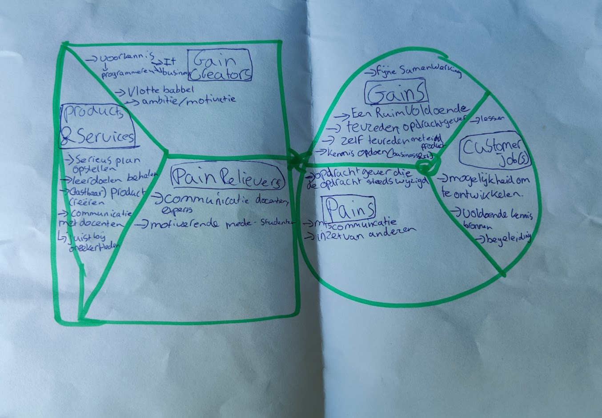

Week 1
Woensdag 30 augustus 2023
Kennismaken met de mensen van de minor.
Hierbij gingen we in een kring staan en kregen we de hele tijd wat van elkaar te weten.
We hebben hierbij ook een versie gaan van over de streep.
Hierbij moesten we over de streep gaan als een uitspraak vanuit een presentatie van toepassing is. Dit ging over slimme apparaten.
Daarna gingen we in groepjes van 3, allen ons huiswerk-filmpje beschrijven d.m.v. een puzzel.
Door het kijken van de deze video (video's over ontwikkelingen in IT) hebben we een puzzel gemaakt op een bord en deze uiteindelijk presenteren aan de klas.
Hieronder is een foto van het bord met de drie stories bij elkaar
Vervolgens gingen we een eigen value map creëren a.d.h.v. onderstaande template.
Deze ziet in mijn situatie er alsvolgt uit:

Donderdag 31 augustus 2023
We hebben een ESP bordje gekregen en een bakje met verschillende componenten voor een geatomatiseerd plant water systeem.
Vervolgens hebben we in Visual Studio Code geprogrammeerd en zijn we begonnen met het maken van een lamp knipper systeem. Dit deden wij met een lichtsensor.
Daarnaast hebben we gebruik gemaakt van een breadboard. Een breadboard is een een wit bordje dat ervoor zorgt dat het gemakkelijk maakt om een proof-of-concept op te zetten.
Dit wordt gebruikt zodat je niet alles direct moet solderen.
De lichtsensor detecteert de waarde van het licht op het moment en in de code bepalen wij of het lampje op het ESP bordje aan of uit gaat.
Mijn ESP zag er aan het einde van de les er alsvolgt uit:
Het script dat vervolgens de waarde van het licht detecteert en vervolgens in het beeldscherm laat zien is alsvolgt:
#include <Arduino.h>
const int ldrPin = 39;
const int ledPin = 2;
int lightInitial;
int lightValue;
void setup() {
Serial.begin(9600);
pinMode(ldrPin, INPUT);
pinMode(ledPin, OUTPUT);
lightInitial = analogRead(ldrPin);
}
void loop() {
lightValue = analogRead(ldrPin);
Serial.println(lightValue);
if(lightInitial - lightValue >= 200) {
digitalWrite (ledPin, HIGH); // turn on light
}
else {
digitalWrite (ledPin, LOW); // turn off light
}
}
De uitkomst op het scherm is in onderstaande afbeelding te zien:
plak de code.
Mijn breadboard zag er alsvolgt uit, hierbij mistte ik enkel nog de RF-transmitter, Vrijdag 1 november 2023
Tijdens de les Smart Connection heb ik van Witek uitleg moeten geven wat GitHub is en wat je er allemaal mee kan.
Ik heb in de simpelste vorm aangegeven wat het was. Volgens mij begreep de hele klas mijn uitleg.
Vervolgens hebben wij met stickey notes aangegeven met dingen die al bereikt zijn tijdens voorgaande en deze les(sen). Dit samenhangend met de leerdoelen van de minor.
Voor 1: Opdrachten uitvoeren, vragen/opmerkingen tijdens het uitvoeren hiervan.
Voor 3: Begonnen met IoT devices (planten systeem).
Voor 6: Medestudenten helpen en uitleg geven.
Tijdens de les hebben we aandacht besteedt om een "Hello World" website op te zetten met HTML en vervolgens met CSS erbij.
Deze zijn hieronder te bekijken:
- HTML pagina
- HTML + CSS pagina